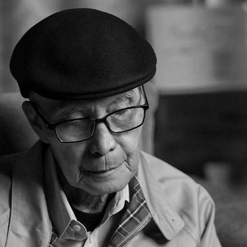

Selamat pagi, siang, sore, malam…
Aku Rama Dharma Putra Sutanto biasa dipanggil Rama, seorang laki – laki yang sedang bertarung dengan nasib
di kota orang. Aku menetas di Tulungagung, Kota kecil yang terkenal dengan “cethe”nya. Mamaku punya 2 anak,
aku dan adikku, diantaranya aku adalah anak paling “bandel” hehee..
Saat ini aku sedang berperang di kota malang, salah satu kota yang menurutku dingiiin sekali. Kota ini seperti memberikan wajah baru padaku, yang awalnya aku kurang aktif, menjadi hyperaktif. Di Malang ini aku hyperaktif mengikuti berbagai kegiatan, seperti lomba, bersub-organisasi, kegiatan kepanitiaan, bahkan kegiatan pergabut-an.
 |
Aku sangat suka dengan hal – hal yang berbau seni, di otakku rasanya tidak afdol jika hidup ini tanpa seni. Aku suka menggambar dan melukis, walaupun gambaranku hanya sekedar |
| Oiya saat ini aku sedang jatuh cinta dengan seni sastra gegara buku Hujan Bulan Juni karya Alm. Sapardi Djoko Darmono, beliau sangat elok memainkan perasaan manusia |  |